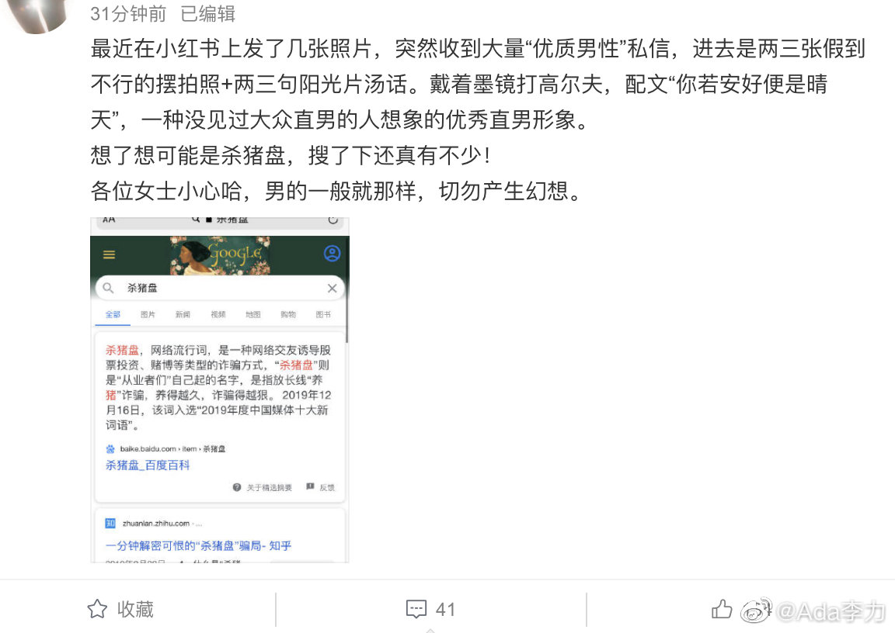

#不明所以#
什么时候都少不了骗术，网络时代只能是更多些。看到小红书上已经有了针对女性的杀猪盘，其实女性见识多些，马上也能识别出这些村炮了。
90年代曾有的骗术是拿易拉宝开罐有奖来骗钱，我曾在长途汽车上，眼看着三个人把某个上当的农民骗下车，据说是兑奖去了。我以为是信息不发达的缘故，所以这么拙劣的骗术一直存在，而且行骗对象是那些看起来明显生活闭塞的人。
但这个推断不对。因为2000年我独自去西北几省旅游时，记得在乌鲁木齐火车站深夜等车，有男士来搭讪，看起来文气且面善，于是我也放下戒心，跟他聊了起来，没过十分钟，又过来一个男的，举着个易拉罐问这位男士：这是不是中奖了？我都没想到自己也能成为这帮货们眼中的行骗对象了。
行骗有时候不看对象是谁，而是靠大面积筛选。
什么时候都少不了骗术，网络时代只能是更多些。看到小红书上已经有了针对女性的杀猪盘，其实女性见识多些，马上也能识别出这些村炮了。
90年代曾有的骗术是拿易拉宝开罐有奖来骗钱，我曾在长途汽车上，眼看着三个人把某个上当的农民骗下车，据说是兑奖去了。我以为是信息不发达的缘故，所以这么拙劣的骗术一直存在，而且行骗对象是那些看起来明显生活闭塞的人。
但这个推断不对。因为2000年我独自去西北几省旅游时，记得在乌鲁木齐火车站深夜等车，有男士来搭讪，看起来文气且面善，于是我也放下戒心，跟他聊了起来，没过十分钟，又过来一个男的，举着个易拉罐问这位男士：这是不是中奖了？我都没想到自己也能成为这帮货们眼中的行骗对象了。
行骗有时候不看对象是谁，而是靠大面积筛选。
- 